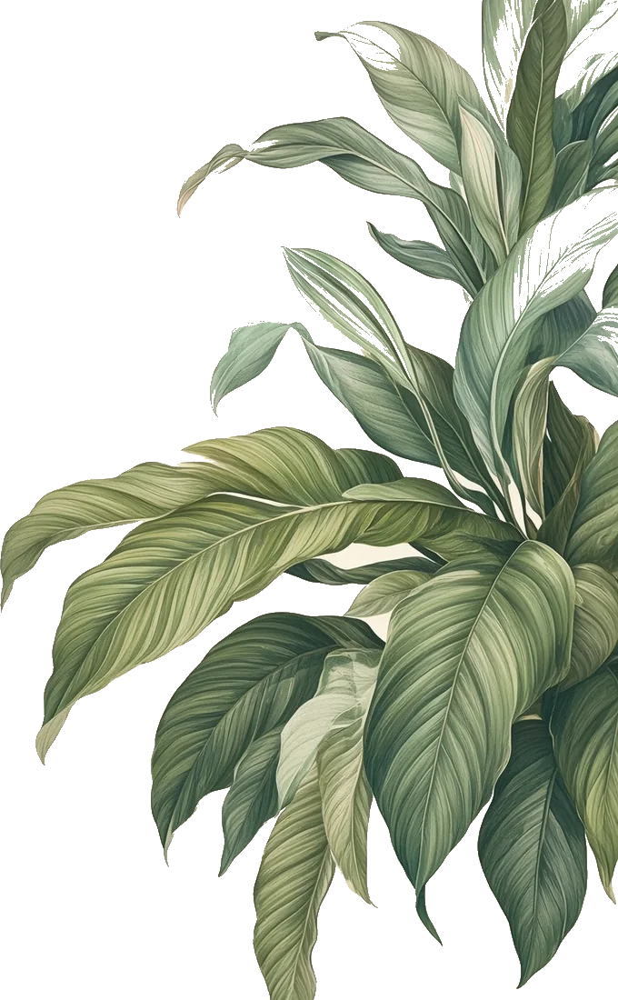
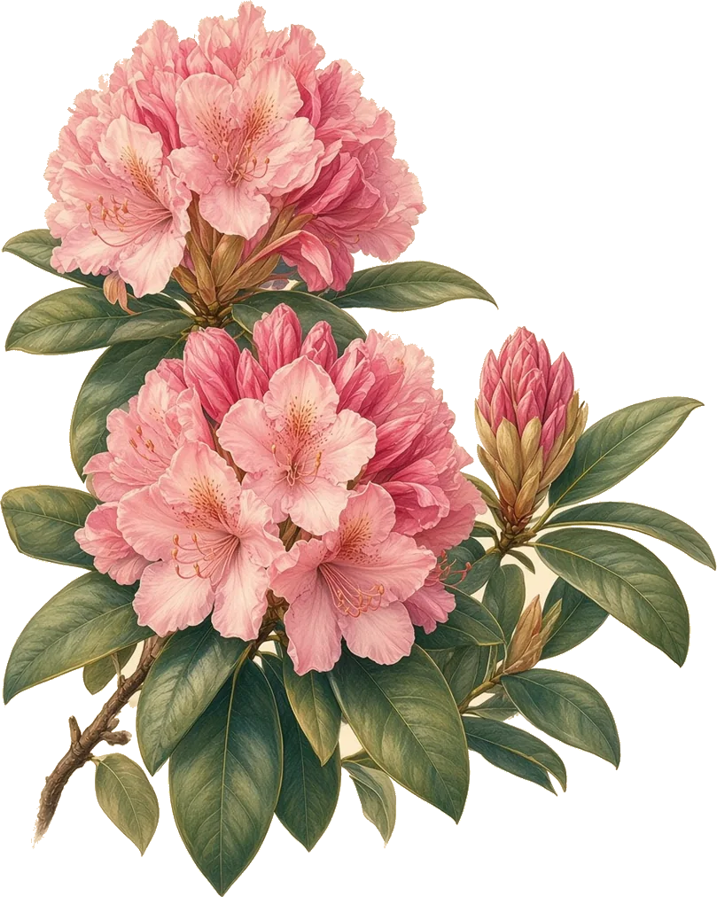

Западное побережье США
Орегон
Штат у Тихого океана
Орегон расположен на западном побережье США. На севере он граничит со штатом Вашингтон, на востоке — с Айдахо, на юге — с Невадой и Калифорнией. На западе штат выходит к Тихому океану.
площадь
255
тыс. км²